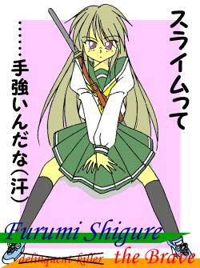

有限会社エーテルワークス。
その社長室のデスク、本来社長が座るべき席を借りて。
俺は、何も無い中空に術で現出させた映像を見ていた。
こんこん
「どうぞ」
がちゃ
入ってきたのは、美しさより凛々しさが先に出る、碧眼の美女。俺とは浅からぬ因縁を持つ存在。
……とりあえず『腹違いの妹』ってことになってるが、これほど容姿の似てない兄弟は他にあるまい。
「そこは社長の席であって、副社長の席ではないぞ」
「いいじゃん別に」
「社長といいお前といい、お互い気にする性格ではないのは判っているが。一応言うべきであろう」
「だな」
判っててなお使うのと、忘れ切って我が物になるのとでは、違う。たしなめる存在は大事だ。
「で、それは遠見の術か……何を見ているのだ？」
「例の案件のやつ。ほらここに」
俺は術を調整し、画像のほぼ中央にあった二人を拡大して示した。巫女姿の金髪少女と、セーラー服の銀髪少女。
「……もしやこの銀髪」
「そう、フルミ君だ」
「そうか、そう転んだのか……予想外だな」
「怒鳴られそうだよ」
自分で仕掛けておきながら、ちょっと予想外の顛末……『危機の種類に応じて、盛り込んである様々な術式から発動させるものを選択する』という複雑な仕掛けなので、こうなる可能性も全く考えられないわけではなかったけれど。
俺は苦笑し、頭を掻きながら答えた。
「にしても……本当に、いいのか？」
態度を改めて、訊いてくる。今までの行為、これから為す行動、それらに対する疑問を
それについては何度も話した。俺の答えは決まっている。
「何度も言ったろう。何が犠牲になろうとも、それは俺の背負うべき罪過だ」
冒険者の誰もが通る道——あるいは冒険者となる前に遭遇する受難、初戦闘。 
人ならざるものとの、初めての敵対遭遇は、普段なら笑い話のネタにでもするような弱そうな相手をして、負けを呼び込むこともありうる。
新米『勇者』フルミの、その相手は……
「でやあぁぁぁぁぁぁぁぁぁぁっ！！」
ロングソードを両手に握り——本来は片手持ちの武器なのだが、今のフルミには片手で振り回すには少々重い——、力の限り敵に斬りかかる。RPGでは序盤に登場するような相手、策も何も無くとにかくぶっ飛ばせばそれで終わるだろう、と思っていた。
『不良狩り』にあるまじき失策であった。
その敵——全長二メートルほどある巨大なスライムは、海の波が引くかのように素早く剣の攻撃をかわし、逆にパンチ（？）を仕掛けてきたのだ。不定形であるが故の、フルミには予想外のその身軽さに、パンチをみぞおちにモロに受けてしまう。
「——っ！？」
呼吸困難に陥ってくずおれかけ、剣を落としてしまう。がしかしそれ以上は倒れず、フルミは何とか体勢と呼吸を整える。落としてしまった剣には拘泥せず、目の前のゼリーのような相手に回し蹴りを繰り出した。
が、この攻撃はなおさらまずかった。
ゼリーのようなスライムの身体に、蹴り出した足がめり込んだのだ。その上、引きずりこまれる。
「ってオレを捕食する気か！？」
「ああもうやっぱりダメですかっ！」
ずぶずぶとスライムに食われていく（？）フルミを見かねて、金髪碧眼の巫女——アレンが飛び出した。フルミの襟首を掴み、引きずり出そうとする。非力な少女の腕一本では、スライムの力には抗えず、殆ど引きずり出せないが……
アレンは構わず、自由なもう片方の腕で符を取り出し、スライムの額（？）に押し付けて叫ぶ。
「噴き散れ！」
内圧に耐え切れなくなったかのように、スライムが四方八方に破裂。符もひとりでに破けてばらばらに散る。アレンは間髪入れずにもう一枚符を構えて、叫んだ。
「撃ち焼け！」
符が帯電して稲妻をほとばしらせ、飛び散ったスライムの破片をことごとく焼き潰した。帯電した符のほうも焦げて炭になり分解する。
後に残るのは、スライムの焦げた臭いと……
「あのぅ……練習用フィールドで、アレン様に立て続けに暴れられても、困るんですけどぉ……」
「…………ぁぅ」
熟練者に手出しをされまくって困れ果てる、初心者用施設の管理人のつぶやきのみ。
冒険者、時雨抖巳（しぐれ・ふるみ）。クラス——勇者。
ごく普通（？）の不良高校生だったフルミは、しかし何の因果か、異世界に召喚され、謎の力で女になってしまった。
元の世界に還る方法、不明。男に戻る方法——不明。
ただ、この世界には何人（？）か実在するらしい、神様ならば何とかできるのでは、とフルミは聞かされた。
「神様に媚を売って『勇者』になり、『魔王』を倒しましょう」
という巫女の声に騙されしぶしぶ従い、フルミは勇者となった。
この話は、そんな薄幸の新米少女フルミの、冒険譚である。
…………………………………………………………………………多分。
「……とりあえず、『巫女』ってのがどんだけ強いのか、よくわかった」
「貴方がどれだけ非力か、もね……」
心底落ち込むアレンと、むかっ腹を立ててふくれるフルミ。
まるでブティックのような冒険者事務所で『勇者』として登録を果たしたフルミは、まだ日が高かった（日本風に言えば十四時頃か）こともあり、その足で初心者訓練場——新米冒険者用の訓練施設へ向かった。冒険者としての自分の実力を確かめたかったのが理由の半分、散々な目に遭って蓄積した一日分の鬱憤を大暴れして解消したかったのがもう半分。
結果は上記のとおりである。
とはいえ、フルミは人間以外の存在とは一度も戦ったことが無い。それにスライムやゴブリンは、確かに雑魚には違いないが、アニメやゲームで描かれるよりは色々と対処の厄介な敵なのだ。勘と才能に頼って戦ってきたフルミが、人間相手と同じようにこれらと戦えば、こうなるのはあたりまえではあった。
加えて女性化に伴う身体能力の変調。体重は落ち筋力も低下したため、打撃力は激減。その一方で身軽になったためか瞬発力やスピードが向上している。また身体が柔らかくなり皮膚感覚が鋭敏化した感じもするが、これらが戦闘に役立つかどうかは不明だ。胸や尻が出たことで身体のバランスが変わったりもしている。
女性化後のフルミの数値的な身体能力は、決して低くはない。戦い方によっては昨今の不良数人程度なら素手でも充分に撃退しうる、という女子としてはハイレベルでバランスも取れたスペックはあるようなのだ。『勇者』登録時の能力測定で出た数字を見るに、フルミもアレンもそう考えていた。
しかし、身体の変化は道具の交換とはワケが違う。僅かな変化でも重大な違和感としてフィードバックしてくることを、二人は失念していた。これは慣れてくるまではどうしようもなく、そして慣れるまでには時間がかかることだろう。
結果、喧嘩の才能が通用せず、身体能力をもてあますフルミが、冒険者としては戦力外になってしまうのは、無理からぬことであった。
それに対して、アレン。力や体術こそ年端ない少女そのもので、戦闘などしうるようには見えない彼女だが、符術がとにかく強力だ。RPGで魔法として語られるような効果を持つそれは、フルミが練習用モンスター相手に窮地に陥るたびに、相手を一撃ないし二撃であっけなく葬り尽くした。本人曰く「あれでも最下級の術式なんで、実戦ではもうちょっと強力なのも使えますよ」とのことなので、冒険者としての能力は心配することなど無いだろう。王室直属の肩書きは伊達ではないらしい。
……そんなアレンが横槍を繰り返すもんだから、訓練場の職員には愚痴をぼやかれたりしてしまったが。
「まあ、仕方ないですけどね。身体の変化にまだ慣れてないでしょうし。さすがにここまで戦えないとは、思いませんでしたけど」
妙に実感の篭った声で、アレンが励ます——のか、落ち込ませているのか。
「……そういや」
叩かれたせいか、フルミは『戦力』になるためのもう一つの可能性を思い至る。
「おまえのその『符術』だっけ？ それをオレが使うことって、できないか？」
「符術を、ですか……」
アレンの使う特殊技能——符術。初心者用モンスターをことごとく粉砕する力を持ち、また改造エアガンで撃たれたフルミの傷を完全に治癒してもいる。実用性は抜群に見えるが……
「符術は遠慮願いたいですね。誰にでも使えはしますけど、こう見えて符は貴重なんです」
「のわりにはポンポン使ってたみたいだが？」
「この世界で符を作れるのは『巫女』のボクだけ、らしいです」
「なるほど……って『巫女』はおまえしかいないのか？」
「冒険者協会の側がわざわざボク用に作ったクラスですから、他にはいないと思います」
「へぇー……」
それで『王室直属』なんていう、偉そうな肩書きがあるわけだ。自分にしか作れないが誰にでも使えるのなら、王侯貴族のために護身用の強力な護符を作り、高く売るという商売も成り立つ。王族としても希少な人材は手元に置いておきたい。
「それで、符術ってのは誰にでも使えるとはいえ、魔術の一種なわけですよ。でも検査結果によると、フルミさんは魔術系統の技能の適性が低いらしいので、ボクと同じくらい使いこなせるようになるには、相当の修行と修練が必要なはずです。あまりおすすめできません」
「そこは根性で何とか」
「多分なりませんよ……修得しきる前に魔王が出てきて、フルミさんの活躍の場がないまま魔王が討伐されちゃったりするかも」
「それならそれで楽でいいじゃねえか」
「男に戻るために神々に気に入られるんじゃ、なかったんですか」
「そうだった……」
自分を男に戻してくれるかもしれない神々に媚を売る（……この表現には問題がある気がする）ためには、つまりフルミ自身がこの手で魔王を倒さねばならない。
「……つか本当にオレがやらないとダメか？」
『神々に媚を売る』のは、フルミが勇者になった前提なのだが……こうマイナスの要因が出されると、気乗りしなくなってくる。
——終わってから別件で神頼みしたって、よさそうなもんだし。
日本人ならばつい陥ってしまう考えをするフルミ。『困ったときの神頼み』……困らないときは放置プレイ。
これにはアレンは反対した。
「打てる手は打っておいた方がいいと思いますよ。神様が人間の都合で動いてくれるとは、限りませんし。でも勇者となれば、神々の強い加護が必須になりますから……『ついでに少しくらいワガママ聞いてくださいよ』ってわけです」
「そりゃあまた、世にも珍しい打算的な勇者だな」
フルミがぼやく。だが作者に言わせれば、打算的でない勇者のほうがかえって胡散臭い。『国王になってやるぜ！』とか『ハーレムげっとおぉぉ！』とか、わかりやすい野望があったほうが信用がおけるというものだ。その野望が人に迷惑をかける類のものでなければ。
「それはそうとして、フルミさんの事情を考えると——バレると厄介ですから、あまりパーティの人数を増やしたくありません。なんでボクとしては、フルミさんには前衛をやってもらいたいんですよね。能力的にも、センス的にも、そっちのほうが向いてそうですし」
「確かにそのほうが性に合ってるが……」
なにせ『不良狩り』である。喧嘩となれば自ら顔を突っ込み、詳しい事情も知らぬまま、どっち陣営もさらっと殲滅するという物騒な性質。女になってしまっても、フルミはまだまだ暴れたい年頃なのだ。
……なんでこんな物騒な性格のヤツが主人公なんだろう。
「でも今日の調子じゃ、バケモノ相手には戦えないだろ？」
「人間相手にだって無理でしょう、その身体に慣れない限りは」
「…………」
認めたくないところを突かれて、フルミは苦い顔で押し黙る。
男女の身体の感覚的な相違を慣らしてしまえば、前とほぼ同等の動きができるだろうとは、フルミも思う。が、慣れようとすると、自分が女になったことを認めてしまうような気がして、どうしても抵抗感が強く出る。
もっとも、『深層心理での拒絶感から体調を崩す』というほどには至っていないので、時間をかければ順応できそうではあるのだが。
「気持ちはわかりますけど、どうせ元に戻れるんだから、女になるのもいい体験だと思って、慣れてみませんか？」
そんなフルミの心情を知ってか知らずか（あるいは察したのか）、アレンが励ます。フルミは笑い飛ばしたい気分だったが……ただ笑い飛ばすには、その明るい声には実感が篭っている気がした。
それでもなんとか、反論を口にはする。
「……元に戻れるかどうか、わからないだろ。本当に“神”とやらが何とかしてくれるとは限らないんだから」
「そのときは、ボクらが何とかしますよ。巻き込んだ責任ってことで」
「『ボク、ら』？」
「はい」
屈託無く返事するアレン。気休めじゃないかと思ったし、『ら』が示す他の面々が誰なのかも気になったが——彼女の澄んだ笑顔を見ると、色々とどうでもいいような気がしてきた。
今までは暴れることでしか解消できなかった、鬱屈した気分——今日のはひときわ激しかったはずのそれが、その笑顔で和らいだようだ。
「……ありがとう、なんか気が楽になった」
そのため、お礼の言葉が自然に出たのだが、
「——フルミさん」
その言葉を聞いたアレンは、態度を改めて真剣な顔を見せる。
「な、なんだよ」
「実は前に言われたときも思ったんですが……フルミさんがお礼を言うのって、すごく似合いませんね」
ああっ、それは禁句だよアレンちゃん。ていうか真剣な顔して言うことはそれかぃ。
「言うに事欠いて何ほざくかゴルァー！！」
「きゃー♪」
振り下ろされたフルミのコブシを紙一重でかわし、走り去るアレン。当然それを追うフルミ。
出逢ったばかりだというのに、仲のいい二人であった。
……ところで、巫女服から符が何枚か落ちていったけど、放っておいていいのか？
と、いうわけで。
——何で西洋風の街並みの中に日本風の浴場があるんだ？
『それを言ったら巫女がいるのだって変だ』と突っ込めそうなことを考えるフルミ。ま、疑問はわからなくもないけど。
じゃれ合ってるうちに予定の宿についた二人は、まず風呂で汗と疲れを落とすことにした。民間の宿を利用せずとも、アレンの立場なら王城を利用できそうなものだし、『王家の計画により召喚された』フルミにしてもそちらに呼ばれてもおかしくないのだが、
「『しばらくは、この世界に慣らし、また勇者としての素養を身につけさせるのが先』って提言しておきましたから。王家の方々とのご面会は、当分先ですよ」
とのこと。アレンの申請を受けて、王城施設の代わりに王家から新米勇者へ提供されたのが、この貸し切りの宿なのだ。
あまり大きくはない。収容人数は30人。しかしそれを、たった二人のために、貸し切り。
泊まる当ての減る一般客には、迷惑な話である。
「しっかし……」
脱衣所で服を脱ぎながらフルミは、変化した自分の体への違和感を再認識した。
男が、女に。詰襟が、セーラー服に。トランクスが、ショーツに……ブラジャーは何処から変化したのだろうか。
「いまだに信じられねえな」
そう呟く声さえ以前とは違うのだから、信じられなくともその事実は否応なしに突きつけられ続ける。
下着を脱ぐために下を向くと目に入る二つの大きなふくらみは、その事実をさらに脳味噌にピンポイント射撃する。ホローポイント弾で理性もグラグラ。
『見てはいけないものを見ている』という思考と、『これは自分の身体だ』という思考が、絶妙なバランスでもって表出し、外面的には何でもないふうに、フルミは浴室に入った。
鏡に映る自分の全裸——大事なところはタオルで隠しているが、胸を覆うものは全く無い——と、対面する。
肩の下あたりまであるストレート。色素が抜けてはいるが白髪のような枯れた印象はない、透き通った綺麗な銀色の髪。天使の輪も見えそうである。
とてもガッちゃん頭——あるいは『
全体的に小柄、胸も少々小振りだが、しかし将来を期待でき、現状でも十分以上に魅力的なプロポーション。そして艶やかな肌。
本来のものとは似ても似つかないその姿は、完全にフルミの……
「……いくらタイプだからって、自分の裸見て鼻血出してたら、ヘンタイですよー」
「うるせえ」
アレンの突っ込みに、フルミは鼻下を手で拭いた。確かに赤いものがついている。実を言えば女性経験に乏しいフルミ、こういう状況で鼻血が出てしまうのも仕方ないところではある。無論アレンの突っ込みも否定するところは何も無く、はたから見れば確かに変態に見えるだろうという自覚もあるが。
さすがにかっこ悪いので、手を洗い顔を洗い、血を洗い落とす。ついでに鼻の中も軽く手を入れて洗っておく。美少女が鼻の穴に手を入れるなど、さぞかしかっこ悪い光景であろうが、フルミはそこまで気が回らない。
自覚は無いが、鼻血が出るほど昂ぶっているらしい劣情に、これ以上振り回されないようにするため、胸をタオルで隠す。そして改めて、とてもそうとは思えない自分の姿と相対した。
……とりあえず追加の鼻血は出ないようだ。
改めて見たとき、まず目についたのは少女（フルミ自身）の目だった。ブラウンの瞳に宿った鋭い眼光だけは、以前に鏡で見た自分のものと、殆ど変わってないように思える。しかし少女の顔全体に対して、それは違和感とはなっていない。不思議とマッチしているのは、なぜだろうか。
——笑えばかわいいかも。
フルミはそう思い笑って見たのだが……何も考えずに作ってみた笑顔は、フルミの性格を如実に反映した。
天使のような顔に浮かぶ、野性味にあふれる挑戦的な笑顔。
結果、可憐で繊細なイメージさえあった雰囲気が一撃で粉砕され、『活発な』を通り越して、どこか男っぽさを持つさばけた雰囲気があらわれた。
これはこれで、さっきほど万人向けではないとはいえ魅力にあふれているのだが……フルミの好みからは少し外れる。その思いが顔に出たのか、目の前の顔もすぐに苦い表情に変わってしまった。
「なに自分の表情で一喜一憂してるんですか」
「……自分に見えないから、慣らし運転してんだよ」
アレンの再度のツッコミに、ウソかホントか自分でもわからない言葉で切り返す。実際、『これが自分の今の姿だ』と目に焼き付けておけば、体に慣れるのも早い気がしなくもない。
——この苦労も、昼間に会ったエセ占い師のせいかな。
思い出して、ため息を一つ……思わず漏らしてから、鏡に映ったそのしぐさを、どこかで見たような気がした。
フルミは唐突に思い出す。
「……おふくろ？」
子供の頃から、フルミはよく喧嘩に明け暮れていた。さすがに小さい頃は、『不良狩り』などと呼ばれ恐れられるほどのイカレた——いやズバ抜けた実力はなかったので、自分も相手もボロボロ、痛み分けの結果が多かった。そんなフルミを見るたびに、彼（今は彼女だが）の母親はため息をつき、「しょうがないやつだ」と笑ったものだ。
その母親のため息の姿が、今の自分と何となく似ている気がした。
さらに思い出す。
昔に一度だけ見た、母親の若かりし頃の写真。写真は白黒だったし、髪の色こそ違うものの、それは鏡に映る今の姿とそっくりではなかったか。
「……やっぱり、親子って似るものなのかな」
その親の若い姿が好み、ということは……父親の性格にもしっかり似たのかもしれない。
その両親を早くに亡くしてしまったからだろうか——フルミはそれらの事実に、どこか心地よい感情を抱いた。普通の不良なら、表層的で程度が低いながら、親子関係など否定するところであろうが。
「その親がこの姿を見たら、なんていうかな」
「案外『実は娘がほしかった』なんて言って、喜んじゃうかもしれませんね」
「おやじならありうるなあ、なんか愉快な性格だったし……って何で背後にいる」
アレンのいきなりの行動に、フルミは物思いを中断させられてしまった。
「女の子初心者のフルミさんに、身体の洗い方を教えてあげようと思いまして」
アレンの、やけに手際のいい、と（作者が）思わなくもない、親切に、
「いっ！？ いい、いらない！ そんなTSのおやくそく踏襲みたいなことしなくていい！」
当然フルミは動揺して断ろうとするが、
「おやくそくかどうかは知りませんけど、ダメですよ。野郎の身体と違って、女の子の身体は繊細なんです。丁寧に洗ってあげないと、今までみたいな洗い方したらきっと肌が荒れますよ」
アレンは聞く耳持たなかった。
「肌なんか別に荒れてもいいから！」
「ダメダメ、肌荒れは美容の天敵だし、感覚だって狂いますよ。そしたらますます戦えないじゃないですか」
「関係あるのかよ！？」
「ありますよー多分。」
「多分かよ！？」
「ちっ、聞こえてたか」
「『ちっ』じゃねえぇぇぇ！！」
…………などという言いあい（じゃれ合い？）がしばらく続いた後、
「胸はこうやって、下から持ち上げるようにして洗います、っと」
「くっ、ひあっ！？」
結局アレンの親切を振り切れずに折れてるフルミがいましたとさ。
「そうやって反応されると、なんかレズにでもなった気分ですよ」
「あ、アホなコト言うなっ！」
からかう笑みのアレンと、真っ赤になって怒鳴るフルミ。姉妹のようなほほえましい光景だ……もちろん、おチビちゃんのアレンが姉。
「じゃあ、今度はその、大切なところの洗い方です」
「い、いいっ！ それはもういいから！ 自分でやるからっ！！」
「だめです。いい加減に洗っていたら、汚れが残ってとり返しのつかないことになるらしいですから」
「それでもいい、ていうかそのほうがいい！ だからヤメテお願いぷりーづっ！！」
暴れ出して手がつけられなくなるフルミ。さながら大きな駄々っ子。
まあフルミにしてみれば、体面など頭から吹っ飛ぶくらい必死。
「……ああもう」
アレンはため息をついて、脱衣所に入り、
「はぁはぁ……助かった、か？」
とフルミが呟くが早いか、すぐに戻ってきた。
「いいから黙って大人しくなる。」
首筋に何かがつけられて、なぜかフルミの体が動かなくなる。しびれるのとはちょっと違う、全身の筋肉がガチガチに硬くなって動けない感じ。未経験だが、これに該当する単語は浮かんだ——金縛りだ。
——符術か！？
「なん、てこと、しやがる、か！」
「こうでもしないと、フルミさん大暴れして、洗えないじゃないですか」
「だから、って、符術、使う、かよ！？」
「だって体力じゃかなわないし。ってことで観念してください」
「やめろ……やめて」
「ダメです」
「……ううっ」
大事なところを洗われている間、フルミは“触診”を思い出し、ちょっとどころではなく泣いてしまったことを、付記しておく。
翌朝……
「……もしかして、一晩中泣いてました？」
「まだ涙目みたいだな……」
朝食の席についたフルミの目は、真っ赤だった。うっすらと涙も浮かんでいるように見える。
あの後、入浴を終えて、夕食を摂り、伏せるように眠りにつくまで、フルミは終止、目に涙を浮かべて、無言で過ごした。無言でいたのは、口を開けば声が震えていただろうから。
その様子は……拗ねた少女そのもの。客観視さえできれば、フルミ自身でも可愛いと思ったかもしれない。
それほどまでフルミが不機嫌になった理由に、アレンはあたりをつける。
「思い出してそんなに泣くほど、“触診”イヤでしたか？」
「……自分でも驚きだよ」
触診がイヤだったのは確かだ。女の子なりたてのフルミにとって、あれはレイプに近い衝撃があった。とはいえ、やったほうにはそういう心理が伴っていたわけでは、当然ない（はずだ）。医者の診察みたいなもんだ、と無理やり納得して、気にとめないつもりでいた。
それなのに、気にしたくなくても頭から嫌な思いが離れず、この有様。意識では納得したつもりでも、深層心理はついていかなかったらしい。
理性と感情がかみ合わない。フルミには初めての経験。
「女の子は感情で動くって言うし……表に出やすくなってるのかもな。涙腺もゆるい気がするし」
「つまり完全にトラウマになっちゃってるんですね」
「……かもしれない」
意識的にどうにか克服しようとしても、潜在意識がそれの存在自体を、あるいは関わるのを絶対的に拒絶するのが、トラウマというものだ。自覚がないものだってあるだろう。
「……すみません、あのとき別の手を打つべきでしたね」
「——なに謝ってんだよ」
意識的な面では、大して気にしていることではないのだ。人に過剰に気にされたくもない。
「でも」
「黙れ。」
話を続けようとするアレンを、フルミは声量を上げて制止した。怒鳴っているわけではなく、声量を上げたとはいえ言葉遣いは荒くなっていないが、言葉そのものが荒いような気がしなくもない。さすがわ『不良狩り』の語彙である。
「アレン、おまえバカだろ？」
「なっ、馬鹿とは何ですか」
「何かやってもらいたくて呼び出した相手に、気概を削ぐようなことを話そうとすることの、どこがバカじゃないんだ？」
確かにアレンの立場ならば、わざわざフルミの心象を悪くするようなことを言うのは、害こそあれど利点はない。
「オレが聞きたくないならなおさらだ」
「……」
「今変なこと聞いて、おまえを恨むようなことには、なりたくないからな」
アレンはこの世界にフルミを巻き込んだ張本人ではあるが、エアガンで撃たれた傷を治癒してくれもした。いきなり女にされて動揺しているところを気遣ってくれもした。そんな彼女を恨んだり嫌ったりは、あまりできそうにないし、したくもない。
今後のことも考えれば、彼女を恨むような心理状態には、なりたくない。
「はぁ……そうですか」
アレンがうつむき気味になる。顔が少し赤い。ひょっとして照れてる？
「ま、そのうちいろいろ聞くだろうけどな。」
「……はい」
「「ごちそうさまでした」」
おそまつさまでした。
「さて、訓練場行くか」
誰と話して決めたわけでもないが、勇者としてはとりあえず戦力になるまで鍛え（慣れ）ねばなるまい。当分は通い詰めると決めた場所に、フルミは行こうとするが。
「フルミさん、訓練場に行く前に、一つ提案があります」
「ん？」
「フルミさんは、その身体に慣れさえすれば、それだけでかなりの立ち回りができそうではあるのですが……モンスターや、特に魔王の率いる魔族たちに対しては、実力不足は否めません。『不良狩り』のスキルは対人専門でしょうから」
「そりゃ、人間以外と戦ったことなんてなかったし」
正確に言えば、不良やチンピラぐらいとしか戦ったことがない。それらと、クマやトラなどの猛獣や、スライムやゴブリンといったモンスターとでは、戦い方は根本から異なるはずだ。
「そのあたりは、鍛えていけばどうにかなる可能性もありますが、魔王に匹敵するほどの力が得られるかどうかといえば、まず無理でしょう。それに正直なところ、あまりのんびりしたくはありません。魔王がいつ現れるのかはわかりませんが、早々に登場してきた場合は厄介ですから」
「そもそも魔王って本当に出るのか？」
再三言うが、魔王の存在は未確認であり、託宣は『魔王が出る』とは言っていない。ただ、言い伝えにたびたび登場するがために、多くの人が『魔王に違いない』と思っているに過ぎないのだ。
「どうでしょうか……魔王でなかったら別の危機が訪れることになりますけど」
「その場合、勇者って役に立つのか？」
「わからないですねぇ……危機の詳細によります」
「いい加減だなオイ」
もともと王家による一連の魔王対策計画は、「魔王が復活する！」と不安がる民をなだめる意味合いが強いので、『託宣による危機が実は魔王じゃなかった場合』というものを全く想定していないのだ。
「ま、考えないことにしましょう。フルミさんにとっては、魔王を倒すのは手段であって、目的ではないので」
「おまえの場合は？」
「冒険者が役立たずなら、ボクもお払い箱ですよ」
「そりゃ
「で、話を戻します。
時間をかけて鍛えるのがイヤなら、強くなる方法はもう一つあります。何だと思います？」
「……強い武器を装備する？」
「五十点ですね。武器が強くても、それを使いこなせるだけの資質が無いと無意味ですし、使いこなすには訓練が必要です。ただ強い武器を装備しただけでは、むしろ弱くなってしまうこともありえます。
ですが、強い加護を持つ武具……いわゆる『魔法の武器』には、そうはならない便利なものも多々あります。例えば、持って戦いを始めるとひとりでに敵を斬り刻む剣とか、狙ったものは決して外さない上に命中後に手元に戻る槍とか」
「聞いててすこぶるインチキ臭いんだが……」
剣がひとりでに敵を斬るなんて、フルミの感覚では『剣に使われる』気がしてイヤな気分だ。
「つまりその、魔法の武器とやらを手に入れろ、と？」
「そういうことです」
「……勇者にあるまじき腐った根性、のような気がするのはオレだけか？」
「でも『神に祝福された武器』を持つのは勇者の特権、という気はしません？」
そういう武器は非常に高価だったり、得るのに試練が付きまとったり、所有者を選ぶなど一癖あるものが多いので、それを使っているからと言って『根性腐ってる』とは言えない。
「んじゃあ、どんな武器があるんだ？」
「一番の候補は……これなんてどうです？」
アレンが一枚の絵を差し出す。
描かれているのは、岩に突き刺さった一本の剣。岩から見える刃の部分と、柄の部分と、まるで棒のような鍔の部分の三つが、ほぼ同じ長さであろうか。
剣の名前らしきものが絵の脇に書いてある。絵の下のほうには、剣の由来らしき説明も書いてあった。
が。
「…………読めねえ」
会話は何故か日本語が通じるというのに、表記文字は日本語ではないので、フルミにはさっぱり読めなかった。もしかしたら、日本語で会話が通じると思っているのは、何らかの魔術（符術）の効果によるのかもしれない。
「これは何だ？」
「その紙は観光用のパンフなんですけど……」
と、アレンはその絵について説明をしだした。
剣の名前は『神剣ツヴァイハンダー』というらしい。その名のとおり、形状は通常のツヴァイハンダーと変わらない——つまり二メートル以上もある両手持ちの大剣だ。柄の先に紫色の水晶がついているのが、通常のツヴァイハンダーとは違う……と言われても、フルミはツヴァイハンダーなる剣など見たことはなかったので、よくわからないが。
この世界を生み出した『双子の創世主』の片割れである、【創世の魔神】ドレッドノートは、かつて別世界で『
強力な魔術戦闘の能力により英雄となったドレッドノートの得物がなぜ剣であるのか、についてはよくわかっていないらしい。ただ、この剣にはドレッドノートの強力な加護が宿っており、所有者は彼の剣術を授かる、という伝承がある。
その剣術の名前は『
「つまり、その剣を手に入れれば『天神十字流』とやらが使えるようになる、ってことか？」
「そういうことです。ただ、剣を岩から引き抜こうとした人はいっぱいいますが、今までに引き抜くことができた人はいません。おかげで今では観光名所です」
「岩から引き抜くのが試練か」
「選ばれたものだけが引き抜くことができる、というのは伝承でもいくつかありますからね。で、フルミさんは異世界から来た勇者ですから、資質ありそうじゃないですか」
「なんかやっぱり根性なしの発想のような気がしてきたな……」
利用できるものは利用してしまえばよさそうなものだが、『簡単に手に入ってしまうとありがたみがない』などと考えてしまう、損な性分のフルミである。
「フルミさん、世界は根性だけで回ってるわけじゃないですよ」
「根性皆無でも回るとは思えないぞ」
と言い返しはしたものの……思うところはあれど、フルミは剣に興味が出てきた。こういう胡散臭い
——それで勾玉貰ったせいで女になっちまったんだから、やめた方がいいような気もするなあ。
フルミは思い出して苦笑したが、好みを変える気にはならなかった。
「というわけで、行ってみませんか？ その剣の場所に」
「……そうだな、ダメモトで挑戦してみるか」
その場所は、聖都ブリューナク——この街のことだ——の郊外の森の中にあるという。
二人は乗合馬車で街門付近の馬宿まで行き、そこで馬を借りて外へ向かうことにした……が、乗馬の経験がないフルミはもとより、アレンまでもがうまく乗りこなすことができず、仕方がないので馬車と御者を借りてその場所へ向かった。
「乗馬って難しいんだな……」
「そうですね……」
揃って乗馬に失敗した気落ちからか、二人とも元気がない。というよりアレンの場合、乏しい体力に響いたのかもしれない。ぐったりしている。
「今度、練習しないといけないな……」
「ボクはあれに乗れる気がしないです……」
「何を弱気な」
などと弱音を吐き合っていると、御者が会話に乗ってきた。
「そうですよーアレン様。勇者とパーティを組んだってことは、これから打倒魔王を目指して巡業するんでしょう？ 乗馬くらいできないと不便でしょうがないですよ」
「今日みたいに馬車で行くからいいです」
「馬車の場合は御者が要りますよ〜？ 私もついていって差し上げたいですけど、家庭も仕事もありますし」
「フルミさんにでも訓練させます」
「オレかよ。」
そんなことをすると下手すると数ヶ月くらい勇者としての訓練そっちのけになるだろうから全力でお断りした方がいい。ていうか人雇え。
んで御者が振り向いて、フルミの姿を見て。
「勇者様に、ねぇ……たしかに凛々しいわぁ。御者向きかも」
「御者に凛々しさは関係ないだろ。あと運転中に余所見をするな。」
「かわいらしいアレン様と並ぶと、キャー！ まさに勇者だわ！ 絵になる〜♪」
「聞けよオイ」
「そうだわ！ 今度写生師に頼んでお二人の絵を書かせてもらってもいいですか？ 絶対売れますから！」
「売るな！ っていうか聞けよ！」
「誰に頼んだらいいかしら〜ああそうだわ、宮廷絵師の○○○様に依頼しましょ〜」
なぜ御者ごときに、宮廷絵師などというやんごとなきお方へのコネがあるのだ。
「……なあアレン、この世界の女って、こんなんばっかりなのか？」
「さあ？」
二人のぼやきをよそに、事故を起こすこともなく、馬車は走る。
馬車が道を進めなくなったので、御者を残して馬車を降り、歩くこと約十分。
木漏れ日の差す気持ちのいい森林の中に、剣の突き刺さった岩は確かにあった。生い茂る木々の合間から僅かながら日が射して、剣の存在を照らし出すさまは、都会育ちのフルミには少し神秘的に見える。
今日は二人のほかに人が来る気配はないのだが、観光地というのは本当らしく、馬車を降りてからここまでの間も、足で踏み固めた道ができている。岩のほうも……剣を抜こうとした人たちによって、踏み固めたのだろうか。足を置きやすい形状になっていた。
「ここに来る観光客は、興味本位でこの剣を抜こうとしてみるのが普通ですからね」
「でも引き抜けたやつはいないのか……」
肝心の剣だが……大きかった。岩から出ている分だけで、訓練場で借りたショートソードより長い。アレンの肩くらいの高さがある。確かにコレは、引き抜けば間違いなく、自分の身長よりも長い剣が出てくる。フルミはそう予想した。
そして霊験のほうは……残念ながらこれは、よく判らない。ただ、見た限りでは傷が殆どない、にもかかわらず歴戦を乗り越えた渋みのような雰囲気が、不思議と感じられる。
——興味深いな。でもこんなバカでかい剣、使えるのか？
「……ま、さくっと抜いてみるか」
疑問を押しのけて、さっそく剣に手をかけて抜いてみる。
が、案の定と言うべきか。抜けない。
「ふんぬぐぐぐぐぐぐぐぐぐぐぐぐぐ……」
びくともしないわけではない。が、引けば引くほど、動いた距離に比例した強い力で反発が来る。硬いゴムによって固められているような感触。
結局、全力で引き抜こうとしても、せいぜい五センチくらいしか引き出せない。女の身は非力だから——などという理由では、絶対ない。硬すぎる。
「くあっ！」
結局、剣を引き抜けずに柄から手を離してしまう。勢い余って後ろに転びそうになるが、そこはなんとか踏みとどまる。
「……やっぱ無理か？」
「鍔を持って引くのはどうです？ 体力測定の容量で」
「硬さからいってダメな気がするが……てか、そんな測定あったっけ？」
たぶん背筋力測定のことでせう。
かくて、アレンの言う方法でもう一回挑戦するが、体感的に五センチが七センチに変わった程度で、結果そのものは変わらなかった。しかも今度は踏みとどまれずにすっ転び、木に頭を思いっきり打ち付けてしまう。
「ってー」
「大丈夫ですか？」
「大丈夫……この程度じゃまあ、怪我はしないだろ」
立ち上がってほこりを払いつつ、一応怪我の確認をするフルミ。もし怪我をしていたとしても、彼女ならおくびにも出さずに動けるが。
「でも、思ったとおり全然ダメだな。抜ける気配すらない」
「ダメですか……仕方がない、実力行使でいきましょう」
そう言ってアレンは懐から符を取り出す。トランプを持つように展開した符は、片手にそれぞれ十数枚ずつはあろうか。
アレンが何をやろうとしているのか……想像に難くない。
「実力行使って、まさかおい！」
「フルミさんは危ないので下がっていてください」
フルミのツッコミへの切り返しもそこそこに。
アレンは左手にある符の力を一斉解放した。
「光となりて——」
全ての符が風化して散ると同時、符の数だけ光る玉のようなもの——いわゆる『レイ』が手元に現れ、アレンの周囲へ展開していく
「——撃ち爆ぜよ！」
そのレイが次々に、剣の刺さった岩へと突き刺さり、爆発する。
最初の爆発の余韻も収まらぬうちに、今度はアレンは右手の符をすべて足元の地面へとたたきつけた。
「暴れ狂いて地を砕け！」
符を叩きつけた足元の地面より先だけが、剣の刺さった岩を中心に、おもちゃ箱をひっくり返したかのようにうねる。槍のように突き出てみたり、あるいは陥没してみたり、ひび割れてみたり、爆ぜてみたり。
どちらも、巻き込まれればひどい目にあっただろう。フルミはかろうじて離れていたものの……いきなりのアレンのこの行為に、かなりすす汚れてしまっていた。閃光と砂煙で前も見えない。
「おーまーえーなー、事前に一言言っておくとかしろよ！」
愚痴はしかし、大地を揺らす轟音にかき消される。
アレンはさらに、符を一枚取り出す。今までのものより心なしか一回り大きいそれを、握りつぶして叫ぶ。
「我が希求の意志を——」
閃光と砂煙が晴れ、目の前に——地面からはじき出されて全体がむき出しになった岩があった。
それに踏み込んで、符を握りつぶした手を突きつけるアレン。
「——聞き入れよ！」
開いた手の中に、光の珠が生まれた。
一瞬にしてそれは、膨れ上がって岩全体を包み込む。アレンは浮かんでいるはずのそれを掌で掴んでいるかのように、左手を右手首に添えて両手で支える。
奇怪な破壊音を立てる光の珠。中の岩と反応して、削っているのだろうか。
しばらくして、術の限界がきたのか、珠がはじけ飛び、アレンが疲労から膝をつく。
岩のほうは……ちょっと焦げたり削れたりしたように見えるが、剣を持ち出せるかどうかといえば、ノーだろう。大きさ三メートルはあり、岩をくっつけたまま振るのもまず無理。
フルミはまた試しに剣をつかんでみる。岩が横倒しになっているので持ちやすくはあったが、だがやはり剣も岩もびくともしない。
「……抜けそうにないから、岩砕こうとしたんだよな？」
「ダメでしたけどね……」
掘り起こしてしまったせいで、観光名所が台無しである。
「でも少しずつ掘削していけば、取り出せそうじゃないですか？」
「……試練はドコ行った？」
こんなことして取り出しても、神様が加護してくれるのかどうか……実に不毛な謎である。
「目的のためには、手段は選んでられませんよ」
「その結果、この剣にご利益がなくなったら意味が無いと思うぞ」
「そうだぞなるみ——じゃなくてアレン。これはちょっと無茶しすぎだ」
二人の（二日目にして）いつもの漫才やり取りに、第三者のツッコミが入る。フルミには、それはどこかで聞いたことのある気がする声。
「——誰だ？」
「この剣の持ち主」
声が答える。男の声だ。
剣の持ち主とはつまり——【創世の魔神】ドレッドノートとかいう奴のことか。
「ちょっと想定外の体勢（？）のせいで、こっちの投影がうまくいかなくてな。その目の前の剣を起こしてくれれば、すぐにでも姿が見せれるんだが」
「岩の下にでも居るってのか？」
「違う違う、ってかこんな岩に潰されてたら死ぬって普通」
「じゃ岩の中に住んでるとか？」
「住むには狭いだろ」
小人なら住めるかもしれないが、モンスターと人間以外の種族には、まだ遭ったことはないし、居ると聞いたこともない。
「アレン、これ起こせるか？」
「無理です……今日はもう霊力的に、符術は打ち止め」
霊力——マジックポイントみたいなものか。派手にやりすぎたせいで、空になってしまったらしい。
「おいおいアレン、このあと剣を引き抜く前に、モンスターが襲ってきたりしたら、どうするつもりだ？」
「あ。」
謎の声がアレンをたしなめる。
彼に言われた通りの事態になったら、今の戦力ではモンスターを撃退できないだろう。
「『希求』は威力が強い分、使ったらそのあとしばらく何もできなくなるから慎重に、って言ってあるのに。もっと気をつけないと」
「すいません……」
「知り合いなのか？」
どうも謎の男と話が通じているらしい（というかたしなめられている）アレンに、フルミは訊いた。
「知り合いというか……彼はボクをこの世界に派遣した人です」
「は？」
「やっぱりドレッドノートって貴方のことだったんですね、飛鳥さん」
「他に誰だと思ったんだよ、『討魔士』に『神剣ツヴァイハンダー』なんて」
「へ？」
落ち着いて考えれば、多少の新事実が理解できただろう。だが今のフルミは、わけのわからない発言に混乱するばかりで、どういうことだか理解が追いつかない。
「ま、積もる話の前に、ポカーンとした顔のフルミ君に事情説明するのが先だな。岩の後ろに来てくれ、顔見せる用意ができたから」
「裏に何用意したんですか？」
「それは来て見てのお楽しみ……ってほとでもないけどな」
話を進めるために、二人は岩の裏——剣の突き刺さった反対側に回る。
そこにはディスプレイのようなものがあった。岩を凹ませて平らにし、そこに画像を映している。サイズは36インチといったところか。
そこに映されているのは——
「社長室？」
そう思ったのは、机の上にこれ見よがしに『社長』などと役職を書いた置物がしてあったからだ。
「……あなた社長じゃないでしょ」
「いいだろ席借りるくらい」
社長席（だろう）の椅子に座る男と、その後ろに控える女。
どちらも部屋に似つかわしくない若さだ。フルミと同い年か、せいぜい二つ上くらい——高校生くらいにしか見えない。
容姿そのものは、どちらも美形の部類に入るだろう。特に、男の後ろに控える、冷徹毅然とした雰囲気を持つ金髪碧眼の美女は、街を歩けばナンパ師がごろごろ釣れそうな様が想像に難くない。もっとも、その全てが不毛に終わることも想像に難くない。
が、男のあからさまな特徴が、この画像の現実味を著しく削いでいた。
紫の、髪と瞳。着色しているようには見えないが、さりとてそれらの色としては自然界にはありえないと思われる、不思議な色相。
「なんつーか……どっかで遭ったことあるような胡散臭さだな」
「人の素顔見て胡散臭いとは失礼な」
そう言って男は、何かを取り出して見せる。
「まあでも、遭ったことあるのは確かだな」
それは——いつぞやの、レンズの向こうが見えない、渦巻きメガネ。
それはエセ占い師が持っていた品である。つまり……
「そっ、それをてめえが持ってるって事は……」
フルミは男の正体を察して……叫んだ。
「てめえが黒幕かっ！！」
この終わり方では続いてくれないと困る？
天稀のPostScript 2005年12月31日
タイトル『邂逅と激怒』なのに、キレるのはこれからという終わり方。イヒ。
「そもそもおまえの作品は、常々タイトルと内容がミスマッチだろ」
うをう、何てこと言いますかこのエセ占い師。
「事実だし」
げふっ
「それにタイトル堅すぎるし」
ぐはっ（吐血）
「だいたい案の定人気も無いな。感想ゼロとは（2005年12月30日現在）」
げぼふあっ（悶絶）
「……死んだか。」
（むくっ）というわけで、華村天稀です。
「復活はやっ」
（無視）なんか前回以上に（特に終わりが）駄文ですごめんなさい。でも入浴シーンがあるんで、前回より少しはTS色濃いかもしれないです。
世界観のせいで、こういう絡みは貴重だな……今後どう引っ張ればいいんでしょうねぇ。
「だいたい何でこういう世界観になったんだか」
フルミをTSする言い訳を考えてたら、こうなったような……普通に魔女っ娘でもやらせてたほうが楽だったなぁ。
「しなかった理由は？」
執筆当初に『魔女っ娘』の話を思いつかなかったからです。えっへん。
「威張れることか！ 星へ帰れ！」
ぎゃん！ って作者をバットで打つんじゃねえええぇぇぇぇぇぇぇぇぇ……（きらーん）
「……衛星軌道上に乗ったかな？ 馬鹿監査（作者）が落ちてこないんで、これにて後書きを締めたいと思います。
愚作にお付き合いくださった皆様に感謝を込めて。See you next, good luck」
※追記 2006年1月12日
当作の文庫への掲載あたって、ＭＯＮＤＯ様が主人公フルミのイラストをご提供くださり、また改変しての使用にご快諾くださいました。該当イラスト掲載にあたり、この場にて御礼申し上げます。
「…………（物凄く奇特なものを見た、という表情）」
その顔は一体なんですかヴァケモノドレッドノート君。
「いや、おまえが真面目なことも可能だとは思わなかったから」
『馬鹿監査』という呼び名といい、君たちが日頃どんな風に天稀を見てるのか、よくわかるセリフだね……
「あと何時の間に衛星軌道から帰ってきたのかと」
ああそれは、スペースデブリ蹴りまくって何とか大気圏突入を果たし、太平洋の孤島に無事墜落しました。あとはマグロ漁船に乗せてもらって、漁を手伝いつつエンヤコラ。いやーマグロの茶漬けがうまかった。
「それを『無事』と称せるおまえの物理構造に、なんかとっても興味がわいてきたんだが？」
深いこと気にしちゃいけません。
さて、今回の更新でAppendixなるものが二つほど無意味に掲載されました。余計なことまでツラツラと書き連ねられてる設定書みたいなものですので、興味のある方は目を通し……ても面白くないと思います。
「じゃあ何で書いたんだ、そんなもん。」
ついで言うと、この作品はあちこちに作者の小ネタが隠されていますので、ソースを睨むなり何なりして探してみるヨロシ。
「……小ネタとやらは俺もさっき目を通したが、探す苦労に見合う内容では全然無いから、やめといた方がいいぞ」
（無視）それでは読者の皆様、またお会いしましょう。See you again, good luck!
□ 感想はこちらに □